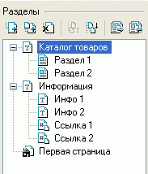

В левой части главного окна программы Melbis Shop находится дерево разделов, отражающее структуру создаваемого интернет-магазина. Указанная структура может объединять разделы различных типов.
По умолчанию для нового магазина задается раздел типа "Первая страница" и по два раздела типа "Отдел с товарами" ("Раздел"), "Страница с текстом" ("Инфо") и "Ссылка на страницу" ("Ссылка").

Порядок следования разделов в дереве разделов меняется соответствующими кнопками, или простым перетаскиванием. Для изменения названия раздела необходимо нажать и удерживать некоторое время левую клавишу мышки на названии раздела. Структура магазина формируется добавлением разделов и подразделов. Уровень вложенности не ограничен. Тип добавляемого раздела определяется опцией Тип раздела, расположенной на закладке "Настройки раздела".